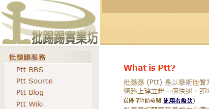
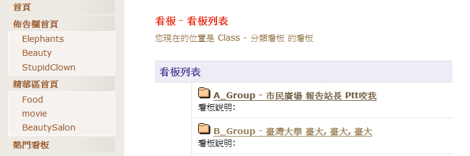
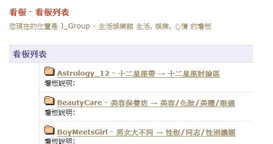
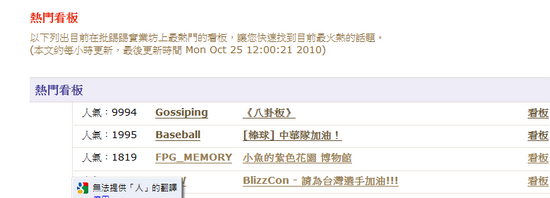
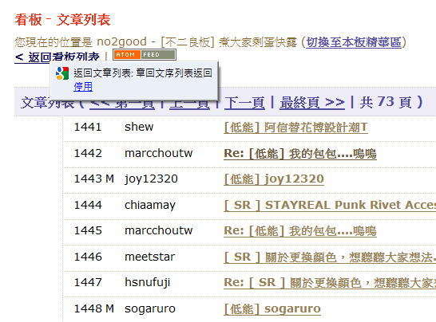
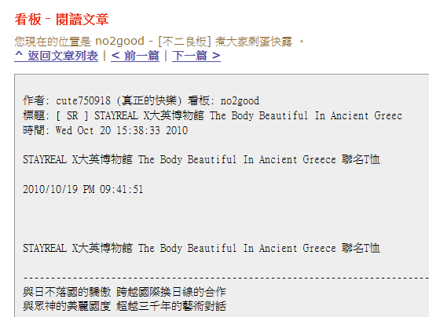
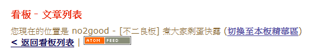
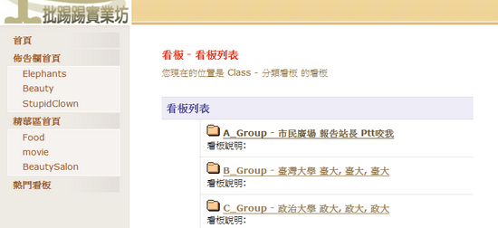
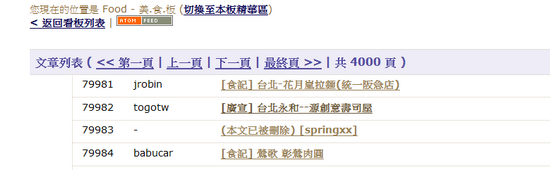

PTT WEB版：用WEB就能瀏覽台大PTT BBS
我們先前介紹過了很多PTT的相關教學，但是BBS已經有了超過十年的歷史，介面對許多新手來說不是那麼親切，那麼怎麼樣才能簡單的瀏覽PTT文章呢？其實你可以使用PTT WEB版。

如果你試著要找PTT WEB版，你會找到的通常是批踢踢實業坊的首頁，那跟你想找的PTT WEB版其實沒什麼關連，台大PTT WEB版的網址是：
http://www.ptt.cc/bbs/index.html
點一下就可以開啟了，開啟以後應該長的像下面這張圖。

如果你是PTT老手，你可以直接打開看板列表尋找你要的看板。這張圖。

如果你是新手，建議你可以打開左邊的熱門看板，直接看看PTT哪些板最熱門。

例如打開不二板，可以看到文章列表。

隨便打開一篇文章，就可以看到文章內文

看板還提供RSS訂閱功能，不過目前故障中。

很多人關心的問：為什麼點了八卦版卻進不去呢？台大PTT WEB版有一個限制，凡是看板板主認為這個板不適合18歲以下的小朋友觀看，看板的文章列表與內容就只能顯示在PTT BBS上，而不會出現在PTT WEB版裡。所以類似八卦版、西斯板、酒板，都不會出現在PTT WEB版裡，點了連結只會回到看板列表的首頁

小秘訣：如果只知道看板的英文名稱，但不知道去哪裡找這個看板，該怎麼使用PTT WEB版呢？你只要修改網址就可以：
例如表特板的PTT WEB網址是：http://www.ptt.cc/bbs/Beauty/index.html
你如果想去美食板，美食板的英文看板名是Food，只要把表特板網址中的Beauty換成Food，如：http://www.ptt.cc/bbs/Food/index.html，就可以了。

如果你連看板的英文看板名都不知道，可以用搜尋器找一下英文看板名，很方便的喔。
PTT看板搜尋器